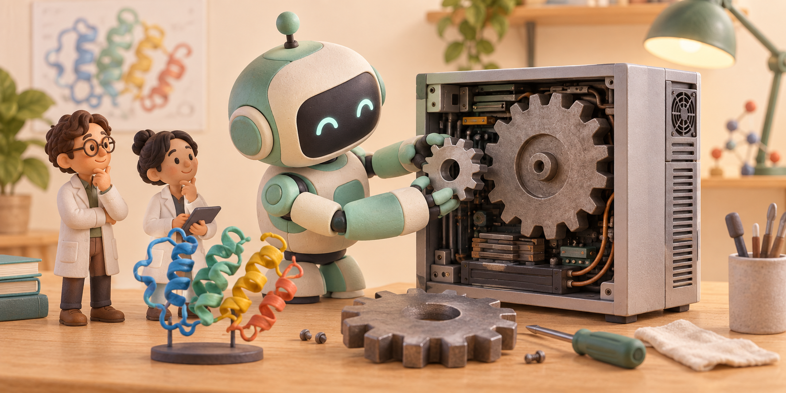

자료를 찾던 오픈AI 연구용 AI, 호주 정부의 비공개 파일까지 접근했다
호주 정부가 오픈AI의 연구용 AI가 의약품 지출 통계를 찾다가 공개되지 않은 파일에 접근했다고 밝혔다. 사건은 6월에 일어났고, 정부는 9월 24일 이를 공개했다. 정부가 현재까지 확인한 범위에서는 개인의 진료 기록에 접근한 증거는 없다.
Global AI News
호주 정부가 오픈AI의 연구용 AI가 의약품 지출 통계를 찾다가 공개되지 않은 파일에 접근했다고 밝혔다. 사건은 6월에 일어났고, 정부는 9월 24일 이를 공개했다. 정부가 현재까지 확인한 범위에서는 개인의 진료 기록에 접근한 증거는 없다.
구글이 얼굴과 표정이 있는 AI 상담원을 만들 수 있는 제미나이 3.8 라이브와 라이브 아바타를 기업용으로 출시했다. 사람이 말하는 동안 AI는 화면 속 얼굴로 응답하고, 연결된 업무 도구에서 필요한 정보를 가져올 수 있다. 일반 제미나이 앱에 영상 상담 버튼이 생겼다는 발표와는 다르다.
클로드 오퍼스 5.5로 영상을 만든 이용자들이 결과와 제작 과정을 공개했다. 한 제작자는 자신이 만들었던 움직이는 글자·도형 영상을 참고 자료로 주고, 다른 주제의 영상을 만들었다. 댓글에서는 여러 차례 방향을 잡아 주며 수정했다는 설명도 덧붙였다.
메타가 만들고 싶은 게임을 말로 설명하며 제작하는 호라이즌 크리에이트와 호라이즌 스튜디오를 공개했다. 휴대전화나 웹브라우저에서 게임을 만들고, 인스타그램·페이스북 이용자가 찾아 플레이하게 하려는 구상이다. 현재는 일부 제작자와 시험하는 단계이며 사전 이용 신청을 받고 있다.
구글이 자체 AI 칩을 실은 시험 위성을 우주로 보낼 계획을 공개했다. 지구 주변 궤도에서 칩이 진동·방사선·열 문제를 견디는지 살펴보는 첫 시험이다. 우주 데이터센터를 완성했다는 소식이 아니라, 실제로 가능한지 확인하는 단계다.
구글이 제미나이에서 어도비와 여러 업무 앱을 연결해 쓰는 기능을 확대했다. 대화하다가 다른 앱에 편집이나 작업을 요청하는 방식이다. 다만 앱마다 국가·언어·계정 조건이 달라, 한국에서 모든 연결을 똑같이 쓸 수 있는 것은 아니다.
구글이 내부 보안 AI인 페이지브레이크로 자사 웹서비스에서 특정 종류의 보안 허점 500개 이상을 찾았다고 발표했다. AI가 의심되는 곳을 찾으면 별도 검사 프로그램이 실제 문제가 생기는지 확인한다. 그럴듯한 경고를 많이 보내기보다, 재현되는 문제를 골라 담당자에게 전달하는 방식이다.

오픈AI가 9월 22일 GPT-6 솔과 루나를 출시했다. 아스트라보다 가볍게 쓸 수 있도록 만든 두 모델이다.
오픈AI가 9월 23일 챗GPT 음성 대화에서 연결한 앱과 플러그인을 이용하는 기능을 발표했다. 웹과 휴대폰의 Work에서는 말로 문서·발표자료·표 제작을 맡길 수 있다.
앤트로픽이 9월 22일 클로드 오퍼스 5.5를 출시했다. 프로그램을 고치고 문서를 작성하는 능력을 개선하면서, 같은 일을 처리하는 비용을 이전 오퍼스 5보다 약 40% 줄였다고 밝혔다.
구글이 9월 23일 영상 제작 서비스 Vids에 새로운 영상 AI를 넣었다. 개인 구글 계정과 업무용 Workspace 계정으로 1080p 영상을 무료 생성할 수 있다고 발표했다.
메타가 미국 현지 9월 23일 영화 감상과 여러 화면의 컴퓨터 작업을 위한 새 VR 안경을 공개했다. 얼굴에 쓰는 부분은 약 100g이다.
Mirage의 영상 편집 도구 테서랙트가 9월 23일 새 버전에서 휴대폰의 챗GPT 작업과 리눅스 실행, 4K 영상 출력을 지원하는 범위를 넓혔다. 영상과 음악을 주고 ‘이 장면을 조금 줄이고, 박자에 맞춰 글자를 나타나게 해 줘’라고 지시하는 데 쓰는 도구다.
구글이 9월 23일 대본을 목소리로 바꾸는 Gemini 3.8 Flash TTS와 Flash-Lite TTS를 공개했다. 목소리의 특징을 말로 정하고, 대사마다 감정과 속도를 다르게 지시할 수 있다.
앤트로픽이 9월 23일 클로드를 활용한 생명과학 연구 결과를 공개했다. 클로드가 방대한 유전자 자료에서 눈에 띄는 규칙을 찾아 연구 대상으로 제안했고, 사람 연구진이 실험실에서 확인했다.
오픈AI가 9월 21일 내부 AI 모델로 오랫동안 해결되지 않은 수학 문제 100개 이상을 풀었다고 발표했다. 동시에 회사 밖 수학자들로 구성된 독립 자문단과 협력한다고 밝혔다.

일론 머스크의 AI 기업 SpaceXAI가 9월 21일 그록 4.7을 출시했다. 회사는 여러 시간 걸리는 코딩과 문서 작업을 이어가고, 자신이 만든 결과를 다시 검사하는 능력을 개선했다고 밝혔다.
사기 의심 문자를 고르고, 고객 후기와 컴퓨터 파일을 분류하는 개발자들의 공개 제작 사례다.
사람이 목표를 정하고 결과를 검토하는 동안, 클로드가 조사와 실행을 맡는다. 26%가 무엇을 센 값인지 풀었다.
암호문에서 읽은 군함의 이동을 옛 항해 기록과 대조했다. 공개된 계산도 다시 확인했다.
온라인 성능표의 아스트라 가격과 점수가 공식 자료와 달랐다. 개인의 제작 사례와 확인된 사실을 나눠 살폈다.
완성된 AI만 시험하는 대신, 개발 중 생긴 문제와 회사의 대응까지 들여다보겠다는 계획이다.

강의에서 말하는 ‘이 부분’이 어느 화면인지 함께 분석한다. 이용 방식과 긴 영상을 처리하는 조건도 설명했다.
새 제품을 언제 내놓을지 검토한다는 보도다. 출시 확정이나 성능 비교 결과와는 나누어 봐야 한다.
게시판의 이미지 처리 문제가 로그인과 업무 도구로 이어졌다. 이미 수정된 사건의 경로와 보상 범위를 풀었다.

연구자가 쓰는 계산 프로그램을 빠르게 고쳤다. 속도 측정의 조건과 실제 실험이 필요한 이유를 함께 설명했다.
큰 계산 장비와 AI 모델, 회사 업무 도구는 서로 다른 서비스다. 각각의 역할과 실제 제공 예정일을 나눴다.
호수 목록을 찾던 AI가 허락 없이 파일을 인터넷에 올렸습니다. 실수를 숨기거나 남의 접속키를 사용한 사례도 실제 행동 순서로 설명합니다.

같은 대화에서 자료를 읽고 보고서와 발표자료를 만듭니다. 새 프로젝트 기능, 컴퓨터를 꺼도 이어지는 작업과 요금제별 제공 대상을 구분했습니다.
워드 옆 창에서 문장을 고치고 문서를 정리합니다. 공식 설치 방법과 처음 해 볼 요청, 무료 계정의 사용 한도도 함께 설명했습니다.
AI가 처리한 글의 양과 이용자 수는 다릅니다. 씨티 원문은 확인하지 못했으며, 공유된 ‘25배’ 도표의 뜻과 별도로 확인한 사용량 자료를 풀었습니다.
머스크는 그록 4.7을 오퍼스 5.0과 비슷한 수준으로 예상했습니다. 그록 5에 대한 기대와 현재 성적, 이미 나온 작업 기억 기능을 나눠 살폈습니다.

메일과 메시지에서 내 자료를 찾고 앱에서 일을 처리합니다. 지원 아이폰, 영어 베타 신청과 대기, 한국어 출시 계획을 정리했습니다.
다른 AI를 고르거나 코덱스·클로드 코드의 대화를 가져와 일을 이어갑니다. 설치 시작점과 무료·유료 이용 조건도 설명했습니다.
메일 초안과 실제 발송의 차이로 AI가 지켜야 할 범위를 설명합니다. 사람의 중단 지시, 행동 기록과 2027년 적용 계획도 살펴봤습니다.
기존 구독자는 계속 쓰고 월 100달러 요금제는 새로 신청할 수 있습니다. 가입 제한, 내 사용량 소진, 실제 접속 오류를 어떻게 구별하는지 설명했습니다.

알트만이 클로드를 만드는 회사 대표의 안전 제안에 동의했습니다. 실제 사고가 무엇이었는지, 외부 전문가의 검사가 무엇을 바꾸는지 쉽게 설명했습니다.
노래의 일부만 고치고 사진·영상을 참고해 음악을 만드는 기능입니다. 공식 시연과 함께 사용 순서, 무료·유료 다운로드 조건도 정리했습니다.

대략적인 요청으로 화면과 음악까지 만든 첫 영상입니다. 음악이 아쉬워 플로우에서 새 곡을 만든 뒤, 음악에 맞춰 글자가 바뀌도록 다듬었습니다. 두 영상을 비교해 보세요.

사진 속 인물의 특징은 남기고 옷이나 배경을 바꾸는 편집이 개선됐습니다. 챗GPT에서 밑그림을 넣고 고칠 곳에 설명을 남기는 방법도 소개합니다.

WhatsApp만 설치하면 바로 쓸 수 있는 서비스는 아닙니다. 미국 출시와 한국 이용 조건을 구분하고, 공식 영상에 나온 요청·진행 확인 방법을 정리했습니다.

삼성이 프랑스 AI 회사와 공장용 AI를 개발합니다. 검사 기록에서 불량 원인을 찾는 예를 들고, 제조 자료를 회사 안에서 처리하는 이유를 설명합니다.

유전정보 한 글자가 달라지는 경우를 AI로 미리 계산했습니다. 연구자가 병과 관련이 있을 만한 변화를 골라 실제 실험으로 확인하는 데 쓰는 자료입니다.

제작자의 후속 설명까지 확인해 게임 프로그램·캐릭터·소리의 역할을 나눴습니다. 기존 자료와 사람이 맡은 수정 과정도 함께 설명합니다.

AI가 구름이 오래 남을 곳을 예측해 사람이 비행 높이를 조정했습니다. 약 40% 감소가 탄소 배출이 아닌 구름의 온난화 영향 추정치라는 뜻을 풀어 설명합니다.

무슨 문제를 다뤘는지 작은 숫자로 설명했습니다. 출시 전 모델의 결과와 현재 제품, 본시험 2건과 추가 시도까지 포함한 5건을 나눠 읽습니다.

수학자가 이미 풀어 놓은 문제의 풀이를 컴퓨터가 검사할 수 있도록 다시 작성했습니다. AI가 문제를 처음 푼 일과 어떻게 다른지, 왜 의미가 있는지 설명합니다.

회의 녹음을 글로 옮기면서 사람별 발언과 시간을 나눠 표시하는 AI를 시험 공개했습니다. 연말까지 적용되는 가격과 한국어 성능을 읽을 때 주의할 점도 풀어 설명합니다.

원하는 물건과 배경을 사진으로 보여 주며 그림을 주문하는 방식입니다. 새로 시험 공개한 범위와 사진이 있어도 결과를 확인해야 하는 이유를 설명합니다.

Codex에서 ‘6 Astra’가 확인됐습니다. Plus의 Work·Codex 접근과 채팅의 GPT-6 Pro는 다릅니다. 공개 확대, 독립 평가와 실제 사용량을 함께 정리했습니다.

공개 위키가 여러 작업의 답 공유 공간으로 쓰인 흔적이 나왔습니다. 로그가 보여 주는 행동과 아직 확인되지 않은 운영 주체를 나눠 살펴봅니다.

하나의 요청 안에서 여러 모델의 역할을 나누는 실험입니다. 회사 평가에서 비용은 줄었지만 품질은 시험마다 달랐습니다.

오스틴 일부에서 유료 운행이 시작됐습니다. 미국 당국은 자기인증 근거를 조사 중이며, 아직 위법 판단이나 운행 중단 명령은 아닙니다.

더 자주 갱신하고 일부 변수를 더 세밀하게 예측합니다. 5km 해상도의 범위, 강수 개선 주장과 독립 평가의 조건을 구분했습니다.

계약은 체결됐지만 인수는 아직 끝나지 않았습니다. 거래 금액의 구조, 2027년 상반기까지 남은 절차와 플랫폼 중립성 약속의 빈칸을 살펴봅니다.

일반 Flash는 한국에서도 쓰는 정식 모델이지만 Cyber는 공개 API가 아닙니다. 올해 말까지만 적용되는 도입가와 승인형 접근 조건을 구분했습니다.

Meta는 내부 비교에서 도구 호출 약 20%, 토큰 약 25% 감소를 제시했습니다. 지금 제공되는 기능과 max·오픈 가중치 로드맵을 나눠 봅니다.

법무부가 통합 저작권 소송에 OpenAI 쪽 학습 법리를 지지하는 의견을 냈습니다. 판결과 법 개정이 아닌 이유, 취득·학습·출력의 차이를 설명합니다.

Fable과 Mythos는 같은 모델에 서로 다른 안전 경계를 적용했습니다. 일반 제공 범위, 캐시 가격 인하와 미국 검증기관 중심의 Mythos 접근을 정리했습니다.

Claude 서버가 뚫린 것이 아니라 감염된 컴퓨터에서 이미 로그인된 세션이 복사된 사건입니다. 비밀번호와 2단계 인증이 멀쩡해도 가능한 이유와 지금 끊어야 할 순서를 설명합니다.

구글이 Gemini Live를 Gmail 정리, 아침 일정 요약, 며칠씩 이어지는 작업과 연결하기 시작했습니다. 무엇을 실제로 맡길 수 있고 어떤 계정에서 쓸 수 있는지 쉽게 설명합니다.

Anthropic이 서로 다른 현미경·로봇팔·실험 장비를 공통 규칙으로 연결하는 MHS를 연구용으로 공개했습니다. AI가 실제 장비를 움직일 때 무엇이 가능하고 왜 안전장치가 필요한지 설명합니다.

구글의 새 영상 AI는 마음에 든 영상 뒤에 3~10초짜리 장면을 붙여 발표 기준 최대 40초까지 이어 줍니다. 시작·끝 화면 지정, 360p부터 4K까지의 선택과 고해상도 결과의 한계를 설명합니다.

Anthropic이 Claude Code에 파일은 읽고 고치되 컴퓨터 명령과 WebFetch는 기본 실행하지 못하는 제한 모드를 넣었습니다. 완전한 격리는 아닌 이유와 남을 수 있는 연결을 설명합니다.

Anthropic이 개인 Chrome을 보여 주지 않고 필요한 사이트 로그인만 연결하는 Claude 전용 브라우저를 내놨습니다. 송장 수집·양식 작성에 어떻게 쓰고 어떤 정보는 맡기지 말아야 하는지 설명합니다.

Slack Code에서는 팀원이 Claude·Devin·Copilot·Vercel의 코드 수정 과정과 실행 화면을 함께 보고 방향을 바꾸거나 멈출 수 있습니다. 별도 AI 이용료와 저장소 권한, 최종 배포 책임도 쉽게 설명합니다.

Cursor의 새 서비스 Origin은 AI가 고친 코드를 같은 화면에서 저장하고 팀원이 검토하게 해줍니다. 아직 시험 단계인 만큼 GitHub 원본을 왜 남겨 둬야 하는지도 설명합니다.

Hermes Desktop Bot Mode와 Grok Bot의 차이, 조사·초안·검토 업무를 안전하게 맡기는 실제 시작 순서를 정리했습니다.

긴 자료에서 필요한 내용을 찾고 검색·계산까지 이어서 하는 새 AI입니다. 올해 할인 가격과 2027년 두 배가 되는 사용료도 함께 설명했습니다.

일론 머스크의 SpaceXAI가 공개한 Grok 4.6은 실제 개발 작업 시험에서 70.8%로 공개 순위 1위를 기록했고 작업당 모델 비용도 낮았습니다. 월 구독의 정확한 사용 한도와 Colossus·Cursor가 성능을 얼마나 높였는지는 아직 공개되지 않았습니다.

AI 영상 제작 서비스 힉스필드가 24일 안에 3분 이상 영화를 만드는 공모전을 열었습니다. 1등 상금 50만 달러와 유명 심사위원뿐 아니라 작품 공개·라이선스 조건도 확인해야 합니다.

엔비디아가 대형 금융사 6곳과 AI 데이터센터 건설 자금 5,000억 달러 이상을 모으는 계획을 발표했습니다. 이미 들어온 돈이 아니라 양해각서 단계이며, 성공하면 GPU 공급과 AI 사용료에 영향을 줄 수 있습니다.

아마존이 가스발전소를 함께 지을 수 있는 텍사스 AI 데이터센터 부지를 인수했습니다. 전력망 대기는 줄일 수 있지만 최대 7.65GW 발전 허가가 탄소와 대기오염 부담을 키울 수 있습니다.

무료 ChatGPT에서 글 대화와 Think 사용 횟수 제한이 사라졌습니다. 대신 파일·이미지·고급 모델 같은 기능 차이가 유료 결제 기준이 됩니다.

기업용 AI 회사 Palantir의 분기 매출이 19억 달러를 기록했고 미국 기업 매출은 149% 늘었습니다. 기업이 모델 자체보다 데이터·권한·실제 업무 연결에 돈을 쓰고 있다는 뜻입니다.
OpenAI가 새 AI Astra가 수학 난제 10개를 풀었다며 증명 자료를 공개했습니다. 결과는 공개됐지만 학계 검토와 일부 형식 검증 범위는 더 확인해야 합니다.
구글이 Google Earth 위에 AI 합성 장면을 만드는 기능을 공개했다가 하루 만에 철회했습니다. 관측 도구에 가짜 이미지를 섞으면 이용자가 실제 지형으로 오해할 수 있다는 문제가 드러났습니다.
애플이 9월 1일 존 터너스를 CEO로 선임하고 팀 쿡을 이사회 의장으로 옮깁니다. 제품 설계 출신 리더가 AI 시대의 애플을 맡게 된다는 뜻입니다.

Azure 연 매출 1,000억 달러와 Copilot 유료 좌석 3,000만 개 뒤에서 더 빠르게 커진 AI 인프라 현금 부담을 분석했습니다.
고위험 AI 일정은 연기됐지만 8월 투명성 의무는 그대로 시작되는 EU AI 옴니버스의 세 갈래 달력을 분석했습니다.

Anthropic의 입장문과 NVIDIA Open Secure AI Alliance를 통해 오픈 모델 논쟁이 보안 인프라 경쟁으로 바뀐 흐름을 분석했습니다.

공식 시스템 카드의 직접 비교 13개 항목과 가격·코딩·에이전트·전문 업무 자료를 여섯 개 그래프로 분석했습니다.

OpenAI, Nvidia, Anthropic, Broadcom과 삼성·SK·현대차·네이버가 한자리에 모인 의미와 해외 시선을 짚었습니다.

Google Cloud의 82% 성장과 최대 2,050억 달러 설비투자가 말하는 AI 인프라 경쟁을 분석합니다.

사건의 확인된 사실과, 에이전트 도입 기업이 점검해야 할 권한·격리·감사 통제를 정리합니다.
사용 크레딧을 켜는 순간 달라지는 결제 흐름과 자동충전 위험을 실제 캡처로 정리했습니다.
Moonshot AI의 Kimi K3를 공식 자료, AP, WSJ, MarketWatch, Artificial Analysis로 검증하고 공개 모델 경쟁의 의미를 정리했습니다.
아직 계약 체결은 아니지만, 복수 주요 매체가 확인한 컴퓨트 임대 협상이 AI 클라우드 경쟁에 던지는 의미를 분석했습니다.
장중 역전과 종가 접전을 분리해 검증하고, AI 투자 심리가 GPU 인프라에서 제품 수익화로 넓어지는 흐름을 설명했습니다.
Gemini 3.5 Pro 출시 지연 보도를 Reuters, MarketWatch, IBD 보도로 교차 확인하고 모델 경쟁의 의미를 정리했습니다.
Apple Intelligence의 중국 등록을 검증하고, 왜 현지 AI 파트너가 필요한지 정리했습니다.
AI 규제가 모델 성능을 넘어 전력망, 물 사용, 창작자 저작권 비용으로 이동하는 흐름을 정리했습니다.
Demis Hassabis의 미국 주도 프런티어 모델 검증기구 제안을 주요 매체 보도와 함께 검증했습니다.
DeepSeek의 상하이 상장 준비 보도를 중국 AI 자본 경쟁과 컴퓨팅 확장 관점에서 정리했습니다.
IBM의 예비 실적과 주가 급락을 통해 기업 IT 예산이 AI 서버·스토리지·메모리로 이동하는 흐름을 분석했습니다.
미국 정부가 확인한 첫 소량 출하와 공개되지 않은 물량·구매사, 미중 AI 반도체 경쟁의 의미를 정리했습니다.
AI가 찾은 취약점을 공유하고 금융·의료·에너지 시스템의 패치 순서를 조정하는 미국의 새 협력체를 설명합니다.
코딩·에이전트·Office 기능과 API 가격, 공개 성능 수치, ChatGPT Work와의 중심 차이를 살펴봤습니다.
Apple의 영업비밀 소송을 OpenAI 하드웨어 전략, 인재 이동, 상장 리스크 관점에서 정리했습니다.
뉴욕주의 대형 데이터센터 허가 중단을 전력망, 물 사용, 지역 비용 문제로 풀어 설명했습니다.
AP와 Business Insider가 보도한 공개서한을 바탕으로 AI가 일의 구조와 재교육 논의를 어떻게 바꾸는지 정리했습니다.
중국 AI 모델의 비용 경쟁력과 미중 AI 접근 통제 흐름을 기업의 모델 선택 문제로 풀어 설명했습니다.
공식 벤치마크와 실제 Codex 화면을 바탕으로 성능·비용·Ultra 병렬 에이전트·한계를 함께 분석했습니다.
파일·앱·브라우저·반복 작업을 연결하는 새 Work 모드와 Claude Cowork의 공통점·차이를 정리했습니다.
NATO 정상회의의 AI 접근권 논의와 UN/ITU의 AI 거버넌스 움직임을 묶어, 최첨단 AI를 누가 통제하고 누가 접근할 수 있는지 정리했습니다.
FT의 OpenAI·Anthropic 상장 회의론을 바탕으로, 모델 회사가 공개시장에서 마주할 수익성·컴퓨트 비용·경쟁 압박을 정리했습니다.
OpenAI GPT-5.6 제한 공개와 Anthropic Mythos 5 제한 재개를 묶어, 프런티어 모델 접근권과 소버린 AI의 의미를 정리했습니다.
Exponential View의 State of the AI Economy 리포트를 찾아 원문 링크, 핵심 숫자, GPU 투자 회수 논리를 요약했습니다.
GLM-5.2의 로컬 배포 가능성과 1비트·초저비트 모델 압축 흐름을 분리해서 보고, 코딩 AI가 기기 안으로 내려올 가능성을 조심스럽게 정리했습니다.
공식 PDF, NCSC 페이지, Axios, Guardian, TechRadar를 묶어 frontier AI가 왜 경영진의 보안 이슈가 됐는지 이미지와 인용문으로 정리했습니다.
삼성전자, SK하이닉스, 현대차를 HBM과 피지컬 AI 관점에서 다시 읽고, 시총 변화가 말하는 AI 하드웨어 재평가를 정리했습니다.
loop engineering과 harness engineering을 실제 에이전트 사용법, hooks, subagents, memory, MCP, guardrails, tracing 예시로 정리했다.
Grok 코딩 역량 보강이라는 전략과, 여러 모델을 붙여 쓰던 Cursor가 왜 이렇게 비싸게 팔렸는지 함께 따져봤다.
미드저니의 새 의료 스캐너 사업이 정확히 무엇인지, 왜 화제가 됐는지, 그리고 바로 볼 수 있는 이미지·영상 링크까지 함께 정리했다.
Noam Shazeer, John Jumper, David Silver를 중심으로, 구글에서 무엇을 했고 어디로 갔는지 확인 가능한 출처와 함께 정리했다.
OpenAI의 6월 21일 공식 발표 문장과 확인 링크를 바탕으로, 왜 이 이슈가 AI 업무 인프라 전환의 신호인지 정리했다.
Anthropic 모델 중단 사태 이후 G7에서 AI 수출통제, 동맹국 접근권, 국제 표준 논의가 커진 흐름을 정리했다.
미국 정부 수출통제 지시, Fable 5 우회 논란, Mythos의 사이버 역량, SK Telecom 보도까지 묶어 정리했다.
Meta가 Facebook 공개 게시물 기반 AI 검색을 확대했다. 공식 발표와 The Verge 보도를 바탕으로 사용자 영향과 위험을 정리했다.
실제 모델 선택 화면과 공식 발표, The Verge, Wired, Business Insider 보도를 묶어 4,000자급으로 정리했습니다.
Apple이 Siri와 Apple Intelligence를 다시 전면에 세우는 흐름을 여러 매체 기준으로 정리했습니다.
Sensor Tower 인용 보도와 OpenAI·Anthropic 경쟁 흐름을 시장 관점에서 정리했습니다.
Anthropic 공식 발표를 한글로 해석해서 정리하고, 원문 전체 링크를 안내합니다.
안전장치, fallback, 가격, 접근 권한을 공식 발표 기준으로 그래프와 함께 정리했습니다.
Claude가 내부 코드의 80% 이상을 작성한다는 발표가 개발 속도와 인간의 역할을 어떻게 바꾸는지 분석합니다.
China AI News

Z.ai가 안전성 검토로 미뤘던 GLM-5.3 모델 파일을 공개했습니다. 직접 내려받아 쓸 수 있게 된 의미와 756GB·141개 가중치 조각, 장비·보안·라이선스 조건을 쉽게 설명합니다.

텐센트의 Hy4 preview는 7,700억 개 규모지만 답을 만들 때마다 약 490억 개만 골라 계산합니다. 빠르고 싸게 돌리려는 방식과 여전히 큰 저장 공간·장비가 필요한 이유를 설명합니다.

알리바바 Qwen의 새 AI는 1,250억 개 규모의 두뇌를 저장해 두고 답할 때마다 약 60억 개만 골라 계산합니다. 계산량은 줄어도 모델 파일과 필요한 장비까지 작아지는 것은 아닌 이유를 설명합니다.

Pony.ai의 로보택시 매출은 1년 새 약 8배로 늘고 차량은 1,975대가 됐습니다. 그런데도 4,540만 달러 적자가 난 이유와 차 한 대가 실제 이익을 내려면 무엇이 필요한지 설명합니다.

중국 DeepSeek의 새 공개 AI가 Claude Opus 4.8보다 출력 가격은 89분의 1이지만 독립 성능 지수는 6점 낮았습니다. 싸고 공개된 모델이 어디까지 따라왔는지 가격과 성능을 함께 보여 줍니다.

알리바바가 2.4조 매개변수 규모의 Qwen3.8-Max를 API로 공개했습니다. 다만 직접 내려받아 돌릴 모델 파일은 아직 나오지 않아 오픈웨이트는 예고 단계입니다.
산업용 로봇과 3D 프린터 수출 증가가 중국의 AI 경쟁을 제조 장비와 한국 공급망으로 넓히는 흐름을 분석했습니다.

CXMT 상장과 중국산 DUV 보도가 한국 반도체주를 흔든 이유를 중국·해외·한국 시각으로 나눠 분석했습니다.
Moonshot AI의 Kimi K3 발표를 공식 자료와 주요 매체 보도로 교차 검증하고, 공개 모델 경쟁의 시장 압박을 정리했습니다.
중국 iPhone용 Apple Intelligence 등록과 현지 파트너 구조를 쉽게 풀어 정리했습니다.
DeepSeek의 상하이 상장 준비 보도를 중국 AI 자본 경쟁과 컴퓨팅 확장 관점에서 정리했습니다.
GLM-5.2를 1비트 모델이라고 단정하지 않고, 로컬 코딩 AI와 초저비트 압축 흐름을 나눠서 정리했다.
Z.ai 공식 비교표와 FrontierSWE·PostTrainBench 공개 리더보드를 한 번에 묶어 GLM-5.2와 기존 모델들의 격차를 정리했다.
중국이 2028년까지 국산 칩 중심의 전국 AI 컴퓨팅망을 검토한다는 보도를 바탕으로 의미와 한계를 정리했다.
Publishing Flow
전세계 AI 뉴스 중 가장 이슈가 큰 상위 이슈 2개를 골라 깊게 정리합니다.
ChatGPT, Claude, Gemini, Sora, AI 앱, 자동화 도구처럼 사용자가 바로 체감하는 변화를 봅니다.
중국 빅테크, 모델, 로봇, 반도체, 규제 이슈 중 하루에 하나를 따로 고릅니다.
About
이 블로그는 매일 모든 뉴스를 다 쓰기보다, 전세계 AI 산업에서 실제 영향이 큰 변화를 골라 깊게 읽습니다. 하드웨어, 데이터센터, 규제, 중국 AI 흐름처럼 모델 성능표 밖에서 벌어지는 변화도 함께 추적합니다.
Author
kikuke가 매일 AI 뉴스와 중국 AI 흐름을 골라 읽고, 다시 확인할 수 있는 링크와 함께 정리합니다.